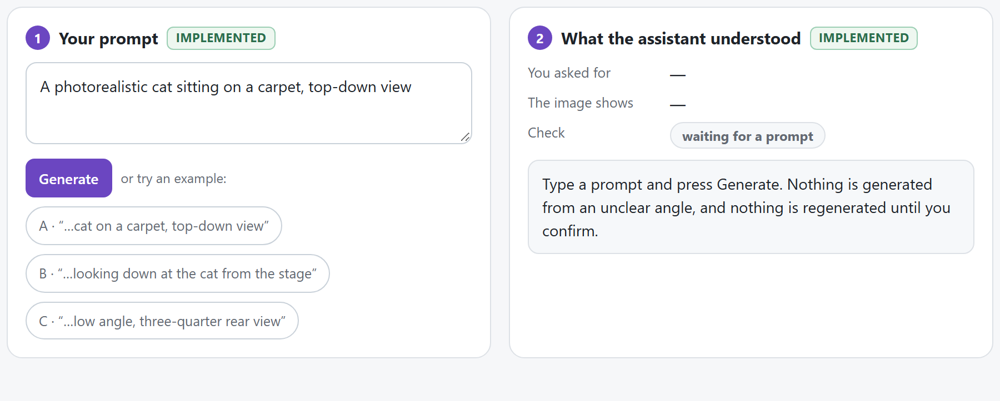
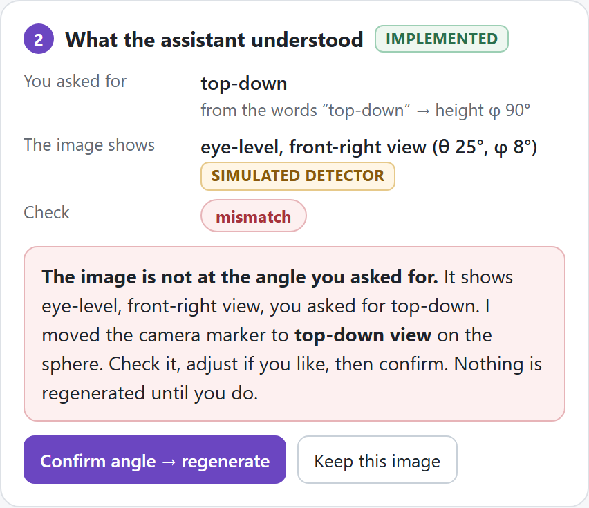
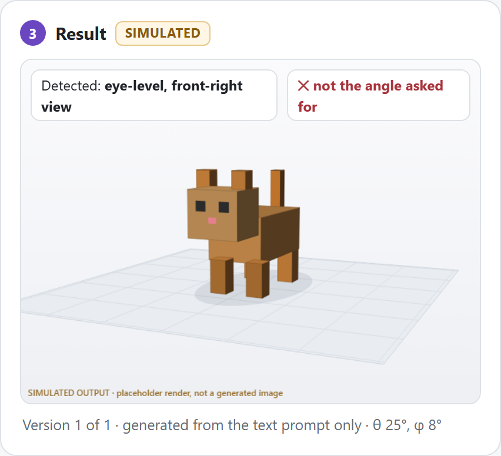
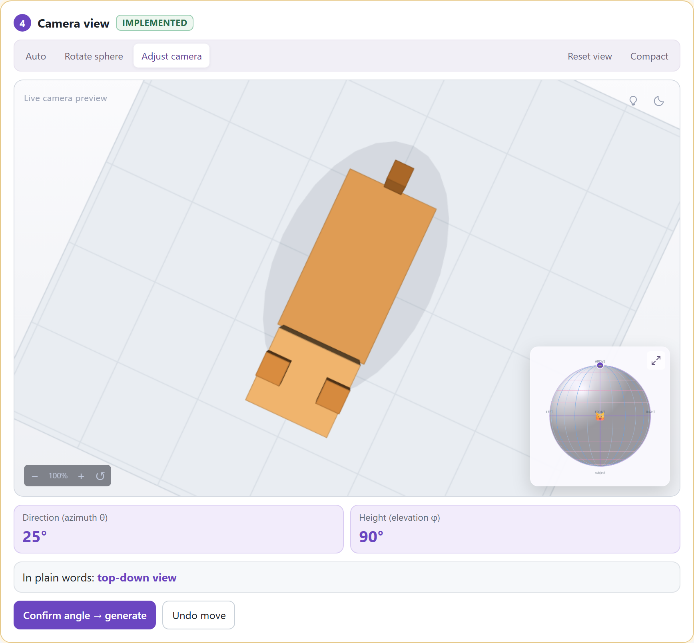
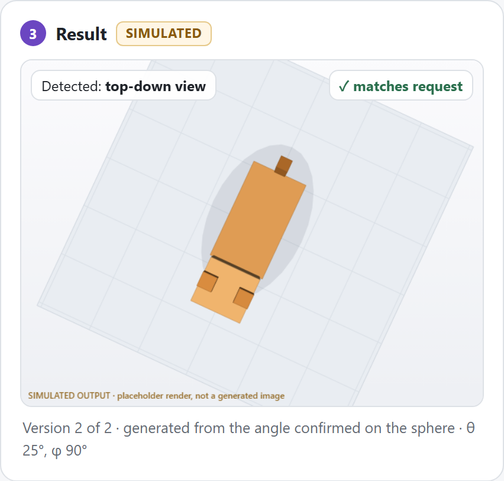
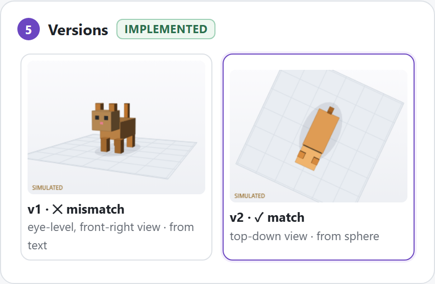

Person wants a top-down photo of a cat. The assistant checks the angle, flags the mismatch and lets the person confirm the fix.
Frames are screenshots of prototype/index.html (day mode, light off, Adjust camera mode). implemented runs in the prototype · simulated stand-in for the image model and the viewpoint detector (placeholder 3D render).






Viewpoint Assistant · Assignment 2 · every image in the frames is a simulated placeholder, not a generated image.